WatThawet/Sukhothai
泰国地獄四天王之弐 タイ地獄四天王の二番手はワットサウェットである。場所はスコータイ市の北、シーサムロンにある寺である。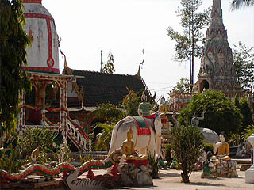 呑気な田園風景の中に突然現れる悪夢のような光景。 境内には坊さんが修行する建物があり、ヒマそうな小坊主が遊んでいるがそれ以外は誰もおらず、シーンとしている。 その無音で暑い境内で展開されるセメント像の狂宴。 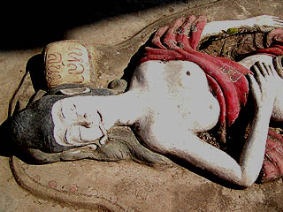 とはいっても暑いですから、昼寝してる人もいる訳で。 日当たりで昼寝してると日射病になっちゃいますよ。おやおやヨダレ垂らしちゃって・・・ 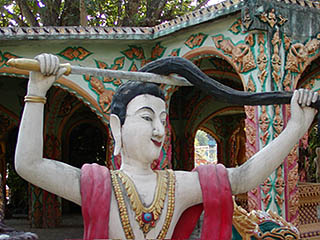 この自ら髪を切る人も仏教説話の一場面なのだろう。よくタイのお寺で見かけた。もしかしてブッダの出家シーン？ 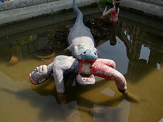 ワニに食われたり
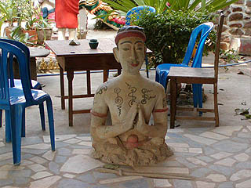 半身埋められたり
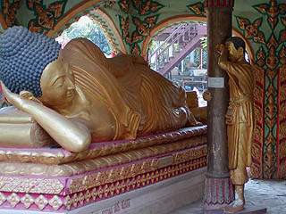 かくれんぼしたりも修行の内です。
境内はあまり広くないが様々な建物が密集して建っているのでかなりごちゃごちゃした感じ。 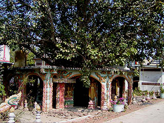 菩提樹の周りを囲いこんだ形の建物。 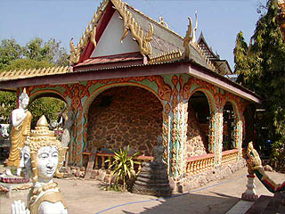 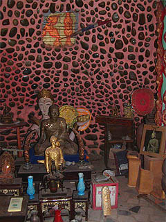 屋根の下には蟻塚みたいなものがあった。中には仏像が置かれていたが内壁がフィフティーズもびっくりなピンクの豹柄。 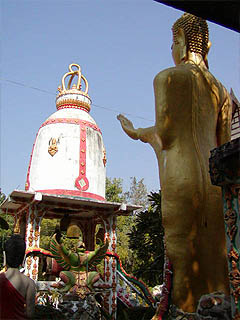 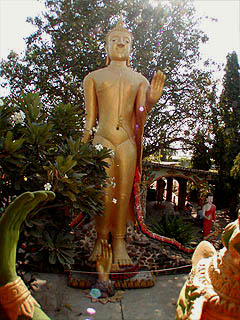 釣り鐘の形をした鐘楼、その前には大きな立像。 立像の足元の手が不気味です。 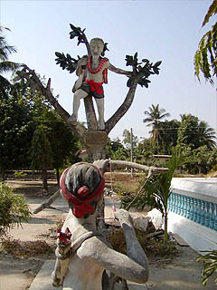 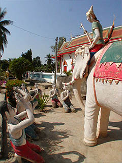 花咲爺さんを狙撃！象使いのカリスマ、故郷に錦を飾る！ 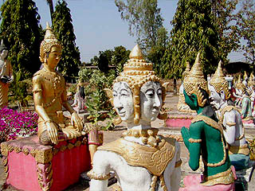 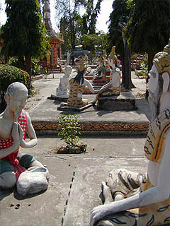 困った事は偉い人に相談しよう、の図。 さて、そんなこんなで地獄である。 実はあまり大規模ではないのだが、何ともいいようのない造形センスが実に味わい深い。 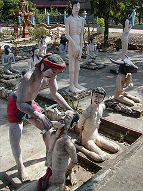 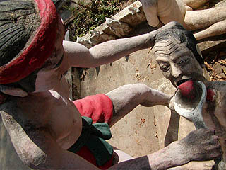 閻魔様の前に全員正座、頭が鳥や牛になっちゃった人、芋虫をひたすら抱えている人、手が異常に大きくなっちゃった人など悩みは様々だ。 まるで奇病専門病院の待ち合い室状態。 右の人は親切なお医者さんに薬を飲ませてもらっているところです。 「は〜い、お薬です」「いや、先生、チョット量が多いんですけど・・・」 「いや、コレ全部飲みきってくださいねえ」「ウググ、ゴボボボボ・・・」 「あと絶対ゲップはしないで下さい、我慢してくださいねえ〜」「グボ、グボボボボ・・・」 ・・・という診察地獄っていうのを考えたんですけど、どうですか？ どうでもいいですね・・・ あ、すみません。暑いんで頭がボーっとしてきました。 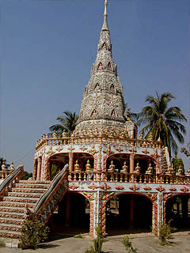 敷地の隅には素敵な仏塔。 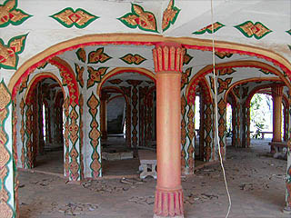 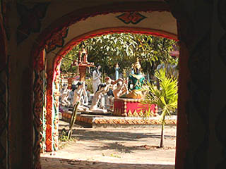 一層目は建設中なのか最初からこういうつもりだったのかなーんにもない。 将来は恐らくここも変なセメント像で埋め尽くされるのだろう。 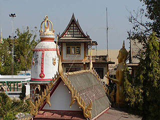 ニ層目と三層目には部屋があり仏像が祭られていた。仏塔のテラスからの眺め。 手前に先程の蟻塚堂、右に大仏、左に鐘楼、奥の建物は坊さんの宿舎。この画面のさらに左に本堂がある。いたって普通のタイ様式の本堂。 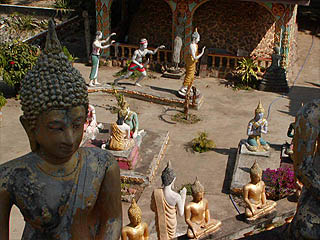 見下ろすとセメント仏がうようよいる。 この中にお釈迦様を殺そうとしている人がいます。どこでしょう。 正解は最後のページです（ウソ）。 帰りしなにお堂の前にファイルがポーンと無造作に置かれているのを見つける。 見るとこの寺の説明が書かれている。しかも英語で。 結構外国人の観光客とか来るんだろうか。今年からアノ黄色い表紙のガイドブックにも掲載されてたし。 それによるとこの寺は1975年にPhraSumroengという坊さんが夢のお告げで作りはじめたらしい。 で、この坊さんの死後も作り続けられ、現在に至っている訳だ。 セメント像は仏法に基づきながら坊さんのセンスでアレンジされているそうです。 頭が動物で体が人間の姿には生前その生き物を殺した者がなるようだ。 で、殴った奴は手が肥大、蹴った奴は足が肥大、ということらしい。 大変ですな〜。 タイ地獄四天王とはいったものの規模が小さいのでチョットここは役不足だったかな・・・
次は大仏だ！
泰国超絶地獄列伝 珍寺大道場 HOME